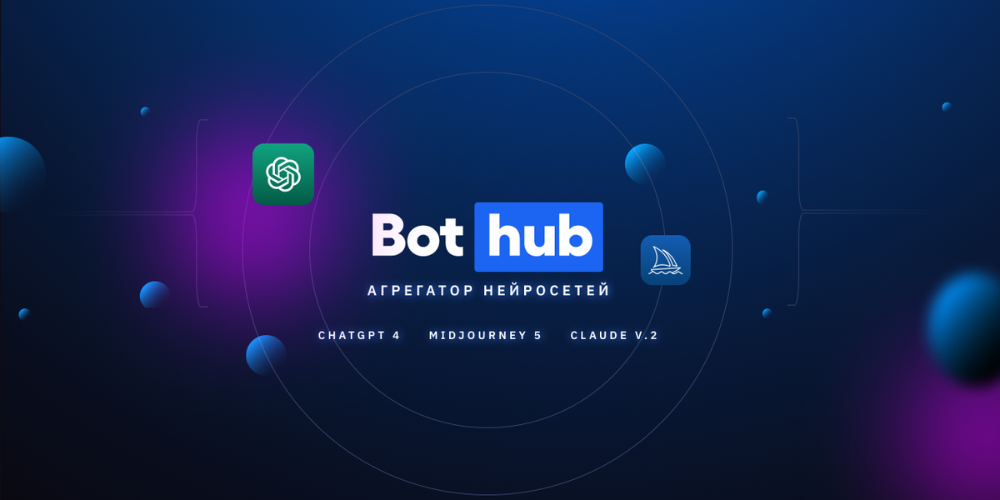

Bothub

Bothub — отечественная платформа, которая предоставляет доступ к широкому спектру AI-инструментов в одном интерфейсе. Сервис не требует VPN или обходных решений и объединяет функции для генерации текстов, изображений, работы с документами и кодом.
Платформа открывает доступ к десяти моделям для генерации и анализа кода, включая ChatGPT, Grok, DeepSeek и Claude. Пользователи могут также обрабатывать документы, транскрибировать аудио и редактировать изображения. Встроенная библиотека шаблонов промптов упрощает запуск типовых задач: генерацию заголовков, текстов для рассылок, сценариев и публикаций. При регистрации предоставляется 100 000 капсов в качестве стартового бонуса.